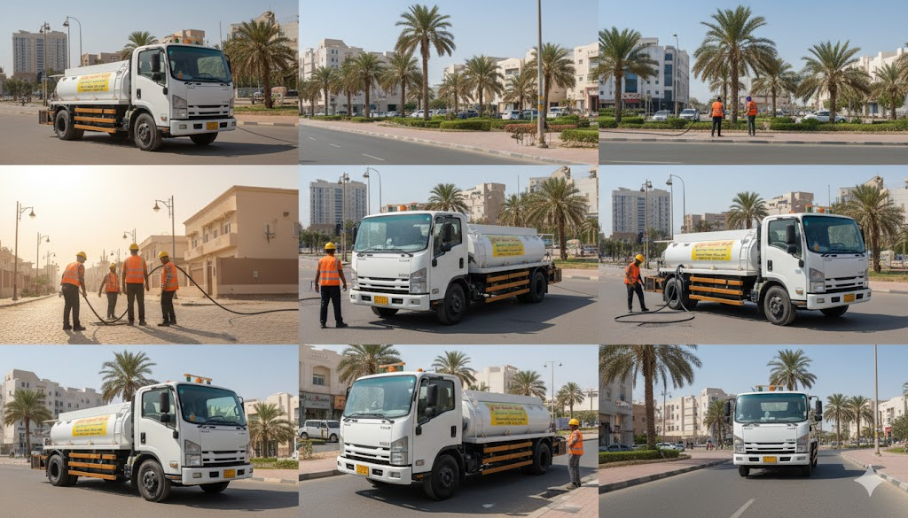
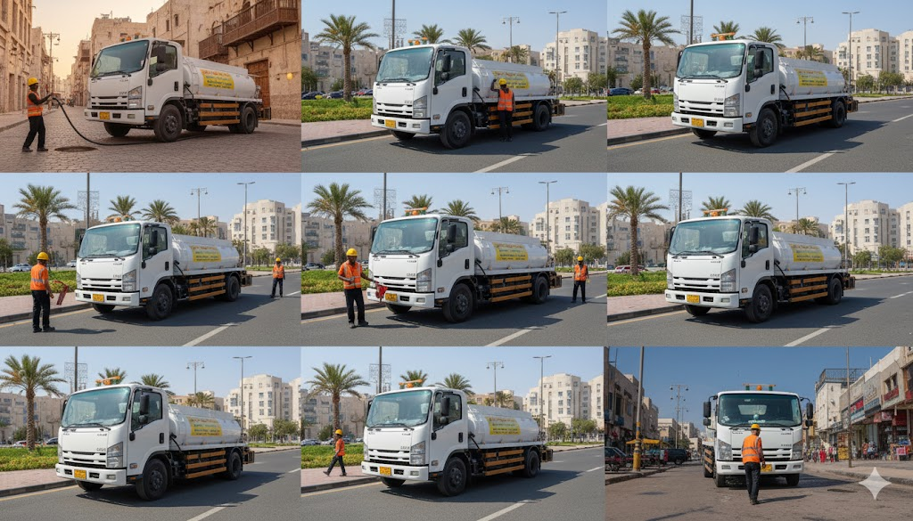
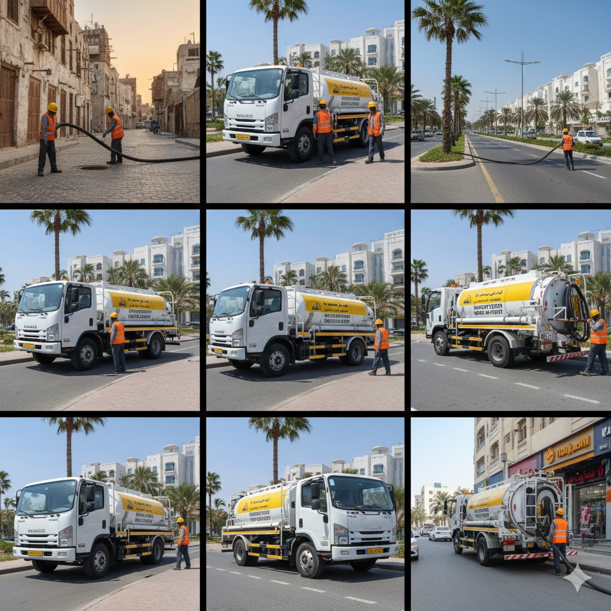
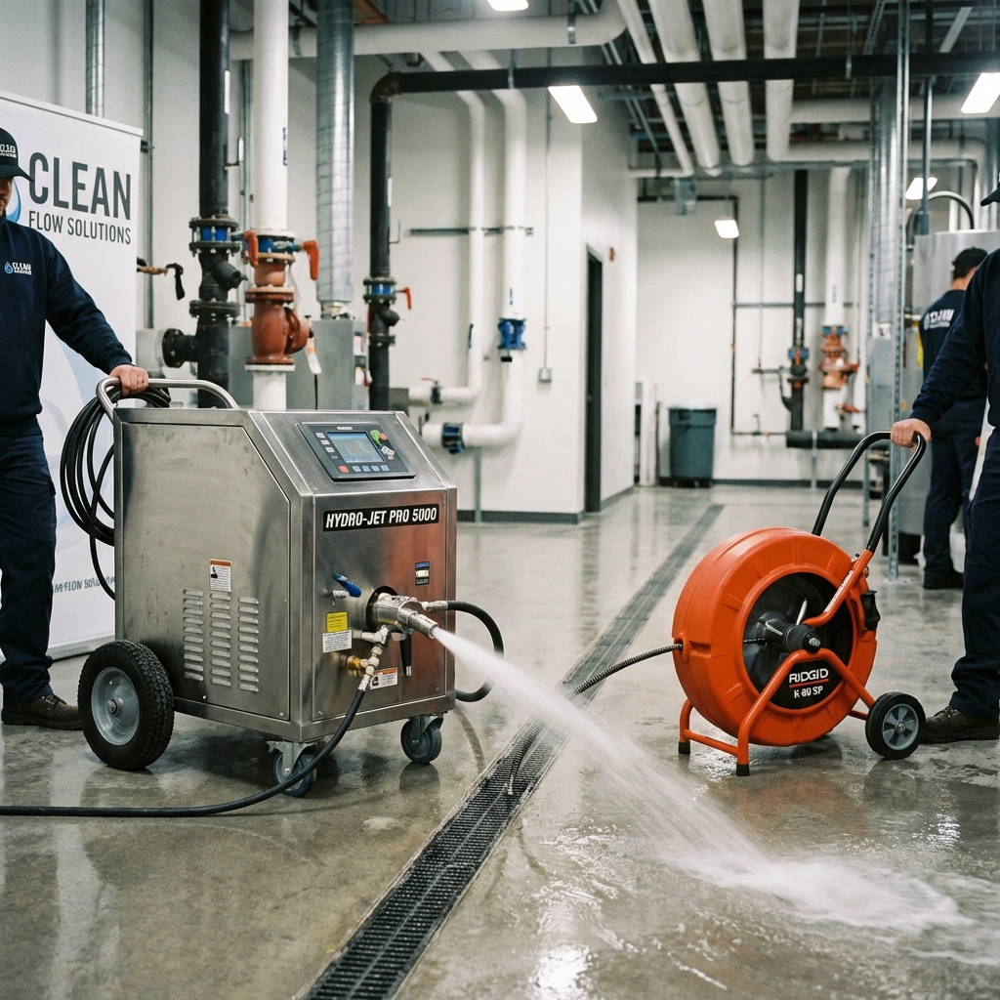

قوة "عربة الشفط والتسليك": الحل الجذري لأصعب الانسدادات!
هل تعاني من انسداد متكرر أو طفح مجاري لا تحله الطرق العادية؟ عربة الشفط والتسليك لدينا ليست مجرد سيارة...
اقرأ المزيد ←
هل تعاني من انسداد متكرر أو طفح مجاري لا تحله الطرق العادية؟ عربة الشفط والتسليك لدينا ليست مجرد سيارة...
اقرأ المزيد ←
مشاكل الصرف ليست مجرد إزعاج؛ بل هي خطر صحي يهدد أسرتك. عربتنا المتطورة لا تكتفي بالتسليك فقط...
اقرأ المزيد ←
انسداد المجاري لا ينتظر المواعيد! لذلك، عربة الشفط والتسليك الخاصة بنا في أهبة الاستعداد 24/7...
اقرأ المزيد ←لا تنتظر حتى يفيض الماء! إذا لاحظت بطء في تصريف الأحواض، أو سمعت أصوات "قرقرة"...
اقرأ المزيد ←
المواد الكيميائية قد تسبب تآكل المواسير وتلفها على المدى البعيد. في خدماتنا نعتمد على...
اقرأ المزيد ←
إهمال انسداد المجاري قد يؤدي لتسرب المياه تحت الأرضية وتآكل الخرسانة. الوقاية دائماً...
اقرأ المزيد ←تعرف على الحل النهائي والسريع لانسدادات صفايات المطابخ والحمامات باستخدام تقنية الضغط العالي.
اقرأ المزيد ←كيف تساهم تقنيات ضغط المياه والهواء في تنظيف غرف التفتيش والبالوعات من أصعب الانسدادات.
اقرأ المزيد ←تعرف على تقنية الضغط العالي (الواتر جيت) وكيف تضمن لك إزالة الدهون والرواسب تماماً من شبكة الصرف.
اقرأ المزيد ←أينما كنت في المنطقة الشرقية، فريق جريان يصلك في وقت قياسي لحل كافة مشاكل الصرف الصحي.
اقرأ المزيد ←تعد مشكلة انسداد المجاري من أكثر التحديات المزعجة، تعرف على خدماتنا في شفط البيارات وتسليكها بالضغط.
اقرأ المزيد ←تقنية الضغط بالماء والنيتروجين هي الحل الأفضل لتنظيف أنابيب الصرف وضمان تدفق المياه بشكل طبيعي.
اقرأ المزيد ←طرق منزلية فعالة وحلول سريعة لانسداد مجاري المطبخ والحمام قبل الحاجة للاتصال بالمحترفين.
اقرأ المزيد ←